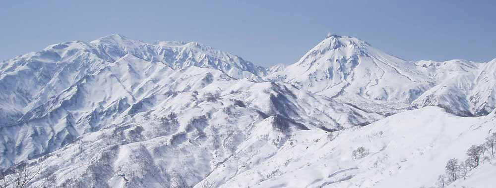
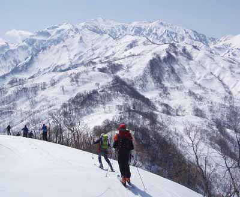
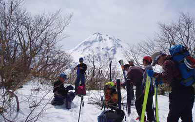
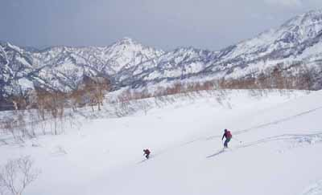
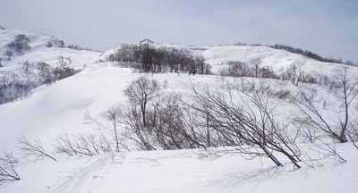
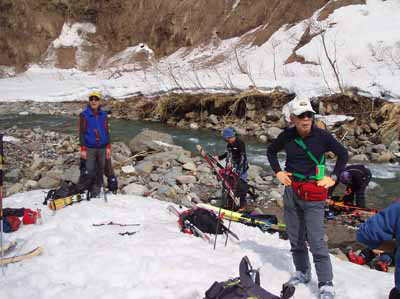
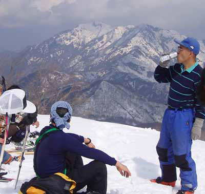
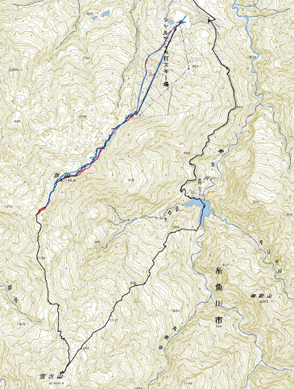

|
|||||||||||||||||||||||||||
|
|||||||||||||||||||||||||||
|
２００７年 春の全国集会 （火打山北面を滑る） |
| 開 催 日 | ２００７年４月７〜８日 | |||
| リーダー | 斎藤俊二、０６年幹事団 | |||
| 報 告 者 | 野口 いづみ | |||
| 参加者数 | 会員５１名 | |||
| 今年のアルパインスキークラブの春の全国集会は、シャルマン火打スキー場を利用して火打岳北面で行なわれた。 第１日目はオプショナル・ツアーとして空沢山から西飛山ダムへ降りるコース。 夜は恒例の懇親会。 ２日目はメイン・ツアーとして放山を往復した。 |
| ４月７日（オプショナル・ツアー） |
| 4月7日、朝8時、権現荘を出発する。 オプショナル・ツアーで、火打山北尾根の空沢山（からさわやま）から西飛山ダムへ降りるグループ16名に入れてもらう。 シャルマン火打スキー場へ車で約20分。 標高500ｍ。 正面に立ちはだかるようにV字型のコースが伸びていた。 クワットで約500ｍを上り、山頂に着く。 気温は10度で暖かい。 8：50、出発。リフト小屋の裏から30ｍ位下ると沢底で、そこから放山（はなれやま）への登りになっていた。 一登りして、9：30に放山山頂（1190ｍ）に着いた。 眼前には正面に女性的な火打が、その右に男性的な焼山が並びあって、青空の下に一大パノラマを展開していた。（写真１） |
|  |
| 写真１：火打と焼山 |
|  | A |
足元からは、前半は幅広い尾根として、後半は痩せ尾根となって、火打山頂へそりあがりなら連綿と続いていた。 本日行く予定の空沢山 |
| 写真２：空沢山を目指して |
|  | A | 多少のアップダウンを繰り返して進むと台地になった。 そこから、尾根や沢筋が複雑にからみあう地形を過ぎ、11：40、平らな所に出た。 眼前の100ｍ程度のピークが空沢山で、9名が山頂に向かった。 15分で空沢山（1420ｍ）山頂に着いた。 木立が多かったが、焼山が正面に見えた。（写真３） |
| 写真３：空沢山からの焼山 |
|  | A | 12：00、下山開始。 登らなかったメンバーの待つ場所まで、気持ちよくザラメ雪にシュプールを刻んだ。（写真4） |
| 写真4：空沢山からの滑降 |
|  | A | ダムが見えるので、おおまかな方向は分るし、急な斜面ではないが、それだけに複雑に尾根が分かれていて、上からはどこがつながっているのか良くわからなかった。 リーダーの斎藤俊二さんは頻繁に地図を取り出しては地形と見比べ、パズル尾根を右に滑り、左に滑った。（写真５） |
| 写真５：西飛山ダムへ下る |
|  | A |
上半分は広く、すばらしい斜面だったが、次第に木立が多くなって、傾斜がきつくなってきた。13：10、668ｍのピークの手前の、枯れたブナの木のある所で休んだ。 そこから左に行くとクロ沢で、斜面を自然に下っていくとそちらに引きずり込まれそうだった。 しかし、前日の下見で、クロ沢は水量が多く、渉れそうなポイントがないと判断され、右側の能生川（のおがわ）へ降りた。 最後は横滑りで標高を下げて行った。 13：35頃、河原に降り立った。（写真６） |
| 写真６：川原に降り立つ |
| 河原を左に巻いていくと、前方に100mを越す巨大なコンクリの壁が立ちはだかった。 河原は西飛山ダムの底で、壁はダムの堰堤だ。 壁の基部近くまで行って渡渉した。 水かさは足首程度だった。 堰堤の左壁沿いの階段状のドロだらけの道を攀じ登った。 14：05、堰堤の上に出て、林道まで50m位登った。 ほとんど水平な林道をひたすら歩くと、15：15、道路に出た。 約7時間の行程で、登り累計500ｍ、下り900ｍ。 |
| ４月８日（放山往復） |
|  | A | 翌日は放山から笹倉温泉へ下る予定だったが、下見でルートは雪不足で中止され、放山往復をした。 この日は火打の山頂は雲がかかって見えなかったが、反対側の権現山が立派な山であることに気がついた。 一部の人は残念そうに放山の山頂の果てまで行き、残った人々はのんびりとビールを飲んでいた。（写真７） 14時過ぎ、散会となった。 |
| 写真７：放山山頂からの権現山 |
|  |
| 放山のＧＰＳ軌跡（荻野さん提供） |